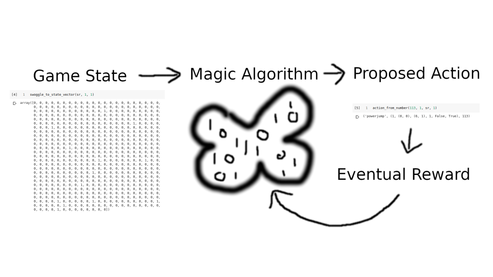
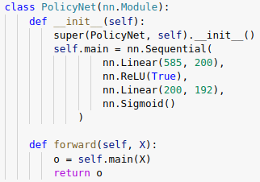
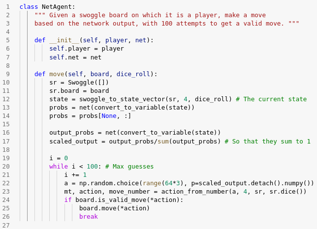
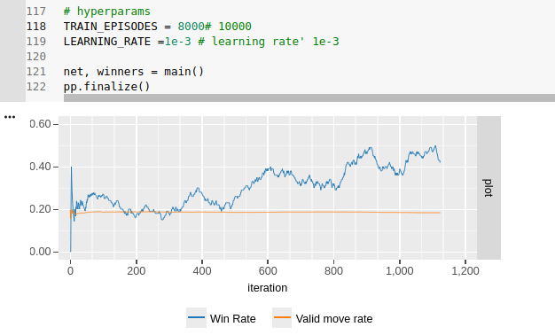
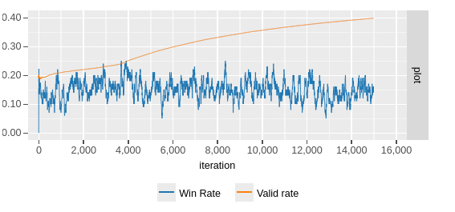

Swoggle Part 2 - Building a Policy Network with PyTorch, dealing with Cheaty Agents and ‘Beating’ the Game
In part 1, we laid the groundwork for our Reinforcement Learning experiments by creating a simple game (Swoggle) that we’d be trying to teach out AI to play. We also created some simple Agents that followed hard-coded rules for play, to give our AI some opponents. In this post, we’ll get to the hard part - using RL to learn to play this game.
The Task

Reinforcement Learning (Artist’s Depiction)
We want to create some sort of Agent capable of looking at the state of the game and deciding on the best move. It should be able to learn the rules and how to win by playing many games. Concretely, our agent should take in an array encoding the dice roll, the positions of the players and bases etc, and it should output one of 192 possible moves (64 squares, with two special kinds of move to give 64*3 possible actions). This agent shouldn’t just be a passive actor - it must also be able to learn from past games.
Policy Networks
In RL, a ‘policy’ is a map from game state to action. So when we talk about ‘Policy Learners’, ‘Policy Gradients’ or ‘Policy Networks’, we’re referring to something that is able to learn a good policy over time.

The network we’ll be training
So how would we ‘learn’ a policy? If we had a vast archive of past games, we could treat this as a supervised learning task - feed in the game state, chosen action and eventual reward for each action in the game history to a neural network or other learning algorithm and hope that it learns what ‘good’ actions look like. Sadly, we don’t have such an archive! So, we take the following approach:
- Start a game (an ‘episode’)
- Feed the game state through our policy network, which initially will give random output probabilities on each possible action
- Pick an action, favoring those for which the network output is high
- Keep making actions and feeding the resultant game state through the network to pick the next one, until the game ends.
- Calculate the reward. If we won, +100. If we lost, -20. Maybe an extra +0.1 for each valid move made, and some negative reward for each time we tried to break the rules.
- Update the network, so that it (hopefully) will better predict which moves will result in positive rewards.
- Start another game and repeat, for as long as you want.
Here’s a notebook where I implement this. The code borrows a little from this implementation (with associated blog post that explains it well). Some things I changed:
- The initial example (like most resources you’ll find if you look around) chooses a problem with a single action - up or down, for example. I modified the network to take in 585 inputs (the Swoggle game state representation) and give out 192 outputs for the 62*3 possible actions an agent could take. I also added the final sigmoid layer since I’ll be interpreting the outputs as probabilities.
- Many implementations either take random actions (totally random) or look at the argmax of the network output. This isn’t great in our case - random actions are quite often invalid moves, but the top output of the network might also be invalid. Instead, we sample an action from the probability distribution represented by the network output. This is like the approach Andrej Karpathy takes in his classic ‘Pong from Pixels’ post (which I highly recommend).
- This game is dice-based (which adds randomness) and not all actions are possible at all times, so I needed to add code to handle cases where the proposed move is invalid. In those cases, we add a small negative reward and try a different action.
- The implementation I started from used a parameter epsilon to shift from exploration (making random moves) to optimal play (picking the top network output). I removed this - by sampling from the prob. distribution, we keep our agent on it’s toes, and it always has a chance of acting randomly/unpredictably. This should make it more fun to play against, while still keeping it’s ability to play well most of the time.
This whole approach takes a little bit of time to internalize, and I’m not best placed to explain it well. Check out the aforementioned ‘Pong from Pixels’ post and google for Policy Gradients to learn more.
Success? Or Cheaty Agents?
https://player.vimeo.com/video/355211341?autopause=0&autoplay=0&background=1&loop=1&muted=1&playsinline=1&transparent=1
OpenAI’s glitch-finding players (source: https://openai.com/blog/emergent-tool-use/)
Early on, I seemed to have hit upon an excellent strategy. Within a few games, my Agent was winning nearly 50% of games against the basic game AI (for a four player game, anything above 25% is great!). Digging a little deeper, I found my mistake. If the agent proposed a move that was invalid, it stayed where it was while the other agents moved around. This let it ‘camp’ on it’s base, or wait for a good dice roll before swoggling another base. I was able to get a similar win-rate with the following algorithm:
- Pick a random move
- If it’s valid, make the move. If not, stay put (not always a valid action but I gave the agent control of the board!)
That’s it - that’s the ‘CheatyAgent’ algorithm :) Fortunately, I’m not the first to have flaws in my game engine exploited by RL agents - check out the clip from OpenAI above!

Another bug: See where I wrote sr.dice() instead of dice_roll? This let the network re-roll if it proposed an invalid move, which could lead to artificially high performance.
After a few more sneaky attempts by the AI to get around my rules, I finally got a setup that forced the AI to play by the rules, make valid moves and generally behave like a good and proper Swoggler should.
Winning for real

Learning to win!!!
With the bugs ironed out, I could start tweaking rewards and training the network! It took a few goes, but I was able to find a setup that let the agent learn to play in a remarkably short time. After a few thousand games, we end up with a network that can win against three BasicAgents about 40-45% of the time! I used the trained network to pick moves in 4000 games, and it won 1856 of them, confirming it’s superiority to the BasicAgents, who hung their heads in shame.
So much more to try
I’ve still got plenty to play around with. The network still tries to propose lots of invalid moves. Tweaking the rewards can change this (note the orange curve below that tracks ratio of valid:invalid moves) but at the cost of diverting the network from the true goal: winning games!

Learning to make valid moves, but at the cost of winning.
That said, I’m happy enough with the current state of things to share this blog. Give it a go yourself! I’ll probably keep playing with this, but unless I find something super interesting, there probably won’t be a part 3 in this series. Thanks for coming along on my RL journey :)